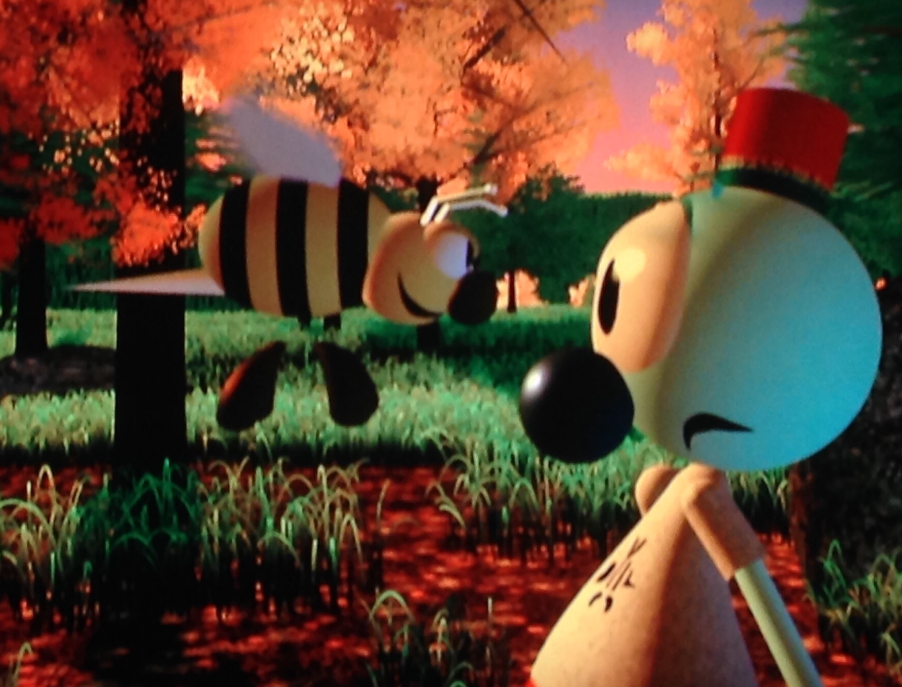
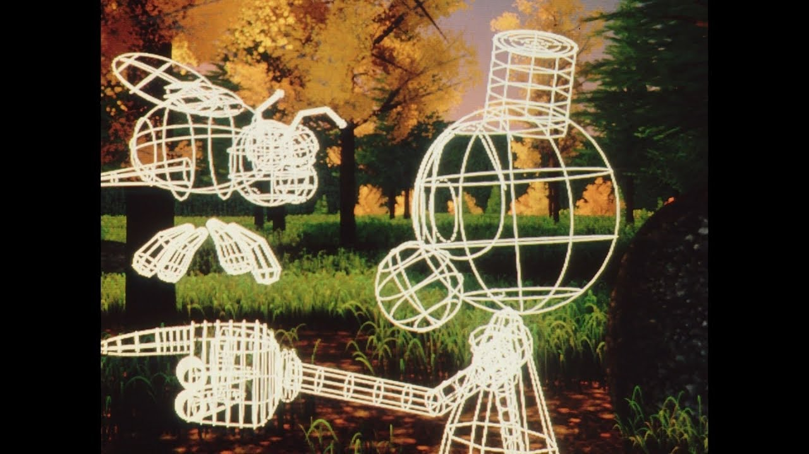

The Andre and Wally B
-

The Andre and Wally B was produced by The Graphics Group in 1984.This company would be renamed Pixar later.This work symbolized computer technology at the time. I also spread computer graphics to the worldThe animation was groundbreaking in this time and helped attract the film industry's interest in computer animation.
-

This story is a boy who are named André awakening in a forest and being confronted by a pesky bee who are named Wally B.The film was released on July 25, 1984, at SIGGRAPH in Minneapolis.This work became a precursor to computer graphics.